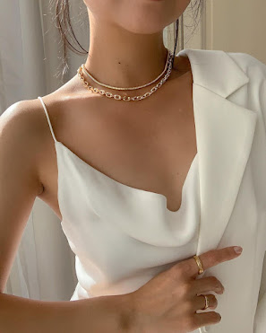
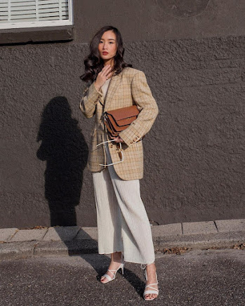
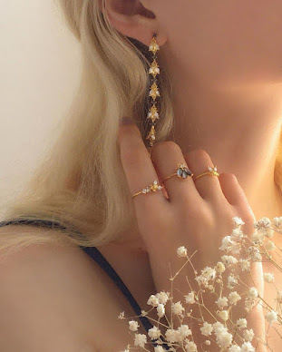
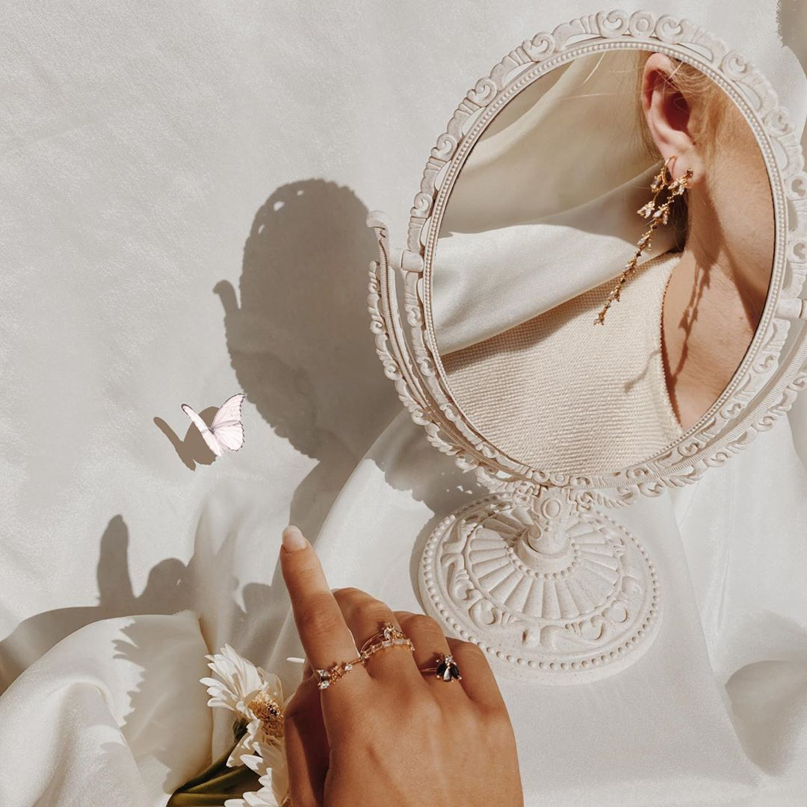
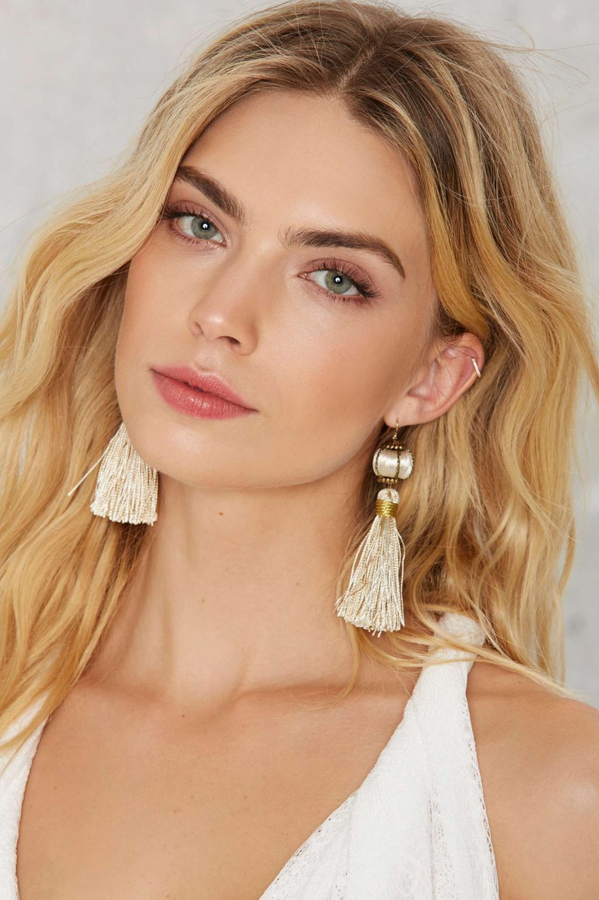

Phụ kiện vẫn luôn là một thế mạnh của phụ nữ. So với nam giới, phái đẹp sở hữu đa dạng và phong phú hơn rất nhiều. Nhưng đáng tiếc là không phải ai cũng có thói quen phân phối phụ kiện với những trang phục hàng ngày của mình. Trong khi đó, chỉ nhị đầu lặp lại các vòng thông báo nhỏ cũng có thể giúp bạn hoàn thiện hơn.
Một bộ đồ đẹp, dù theo phong cách nào đi chăng nữa, thì vẫn luôn ở trong việc biết các phân phối các yếu tố một cách hợp lý và giữ cho thẩm mỹ tổng thể thật “vững chắc”. Khi trên tay bạn một chiếc đồng hồ, một chiếc vòng, một vài chiếc nhẫn hoặc kết hợp tất cả các món phụ kiện, hãy cố gắng chọn một loại kim loại duy nhất. Ví dụ như tất cả cùng làm từ bạc, hoặc vàng, cùng trong tông màu đen, vàng hồng…
Khi các món đồ mà bạn sử dụng hệ thống nhất trong một loại chất liệu kim loại, bạn có thể đảm bảo rằng chúng dễ dàng phù hợp với màu da của mình và có thể thể hiện sự tinh tế trong cách phân phối phụ kiện.
Tương tự như nguyên tắc một, phân phối các món đồ cùng loại để bạn thấy có ghi chú đến tổng thể của mình khi lên đồ. Bạn có thể kết hợp hài hòa thắt lưng với dây đồng hồ, túi xách với đôi giày dưới chân… Dù là cách nào đi nữa, các nguyên tắc sẽ luôn giúp bộ đồ có sự kết nối giữa các phần khác nhau và tạo nên một mắt tổng hợp.
Tuy nhiên, nếu các món đồ của bạn không thực sự tương đồng 100%, thì đó cũng không phải là điều quá kinh khủng. By Nâu đẹp Tuy nhiên, caramel và đen thì không nên đi với nhau bởi tương phản giữa hai tông da này quá lớn.
Nếu bạn chọn trang phục rộng và phức tạp, hãy biết thông tin về thân chế khi bước sang phụ kiện. Và ngược lại, không thả chuột khi tạo điểm nhấn cho các đơn giản đồ bằng những chiếc nhẫn cocktail “cồng kềnh”, đôi bông tai dài hay túi xách thật lớn và nổi bật.
Nguyên tắc trên cũng áp dụng về tiết diện họa tiết và màu sắc. Bạn càng có cơ sở phục vụ trang thì bạn càng có “đất” để phân phối sự kiện, tự do thoải mái thử mình với những món đồ bạo dâm.
Khi mới bắt đầu tổ chức phụ kiện, nhiều người dễ mắc phải lỗi mang tất cả những người mình mới lên. Một trong những điều quan trọng nhất khi phối hợp phụ kiện là phải biết khi nào là đủ. If you are a double cotton at the phức tạp, xin vui lòng bỏ qua các vòng cổ hay dây buộc. Nên hiểu đâu là món chính phụ kiện mà bạn muốn mọi người chú ý đến.
Về mức giới hạn, vòng tay nên dừng ở số 2 và nhẫn thì một chiếc ở mỗi bên. Nói chung, nếu chưa thực sự tự tin về khả năng phối phụ kiện của bản thân, lời khuyên dành cho bạn là đừng vượt quá 3 món phụ kiện. Bởi mục đích của việc đeo phụ kiện là để thể hiện phong cách cá nhân của mỗi người. Nếu bạn lạm dụng quá nhiều phụ kiện, chúng sẽ chen lấn nhau và trở nên rối rắm. Tốt hơn hết là có một “nhân vật chính” trong 3 món mà bạn chọn, nổi bật lên, đánh dấu cá tính của bạn.
Có một điểm khác bạn có thể chú ý để tránh bị rơi vào tình trạng lạm dụng phụ kiện, nên chỉ đeo phụ kiện tay ở bên thuận của mình. Điều này còn tránh cho các hoạt động thường ngày bị vướng víu nữa
Mỗi phụ kiện lại có một nguồn cảm hứng riêng. Trên giá đồ của bạn có thể có những món từ tinh giản, sắc nét đến nhiều chi tiết, đính lông, đính hạt. Khi bạn chọn cho mình một bộ đồ nào đó, hãy cố gắng để hòa hợp phụ kiện với phong cách của quần áo.
Ví dụ, nếu bạn đang mặc streetwear, hãy chọn đôi giày của bố (dad shoes) và túi đeo chéo. Nếu bạn chọn phụ kiện để đi làm? Hãy giữ hai từ “tối giản” và “tinh tế” trong đầu. Hãy sử dụng phụ kiện để mở rộng và nâng cao thẩm mỹ tổng thể của bộ trang phục.
Để tìm ra phong cách riêng và phù hợp với mình, thử điều mới là điều bạn chắc chắn phải trải qua. Mở rộng tầm nhìn về những thứ bạn chưa từng nghĩ tới chẳng bao giờ có thể hại bạn được.
Ví dụ như gần đây, tôi đã mua thử một đôi kính vuông, gọng nhựa để làm mới ngoại hình của mình. Sau bốn năm kính kim loại tròn, sự thay đổi này đã làm tôi suy nghĩ khá nhiều và có phần căng thẳng về việc người khác sẽ thấy thế nào. Tuy nhiên, tôi không mất bao lâu để lấy lại tự tin và giờ đây tôi đeo cặp kính hằng ngày. Tôi chưa bao giờ nghĩ rằng mình sẽ thích một cặp kính để thay thế.
Bài học rút ra ở đây là không ngại thử nghiệm. Tự đẩy mình ra khỏi toàn bộ vùng là cách duy nhất để tìm thấy những vùng thoải mái mới. Vui lòng phát triển mặc định gu ăn uống của mình, thử những điều mới và khi đó bạn có thể hoàn toàn tin tưởng vào việc đánh giá giá của mình và phân phối phụ kiện theo cách mà bạn muốn.